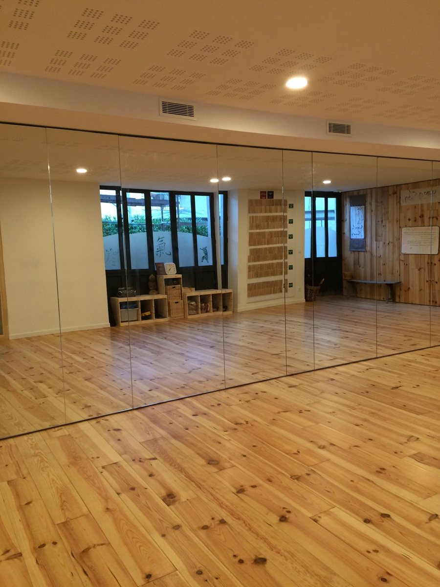
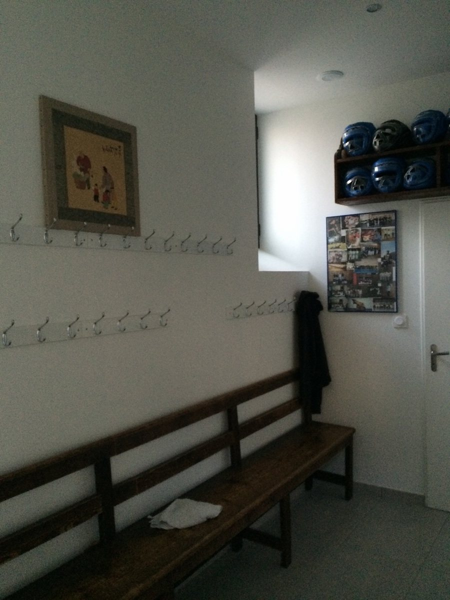
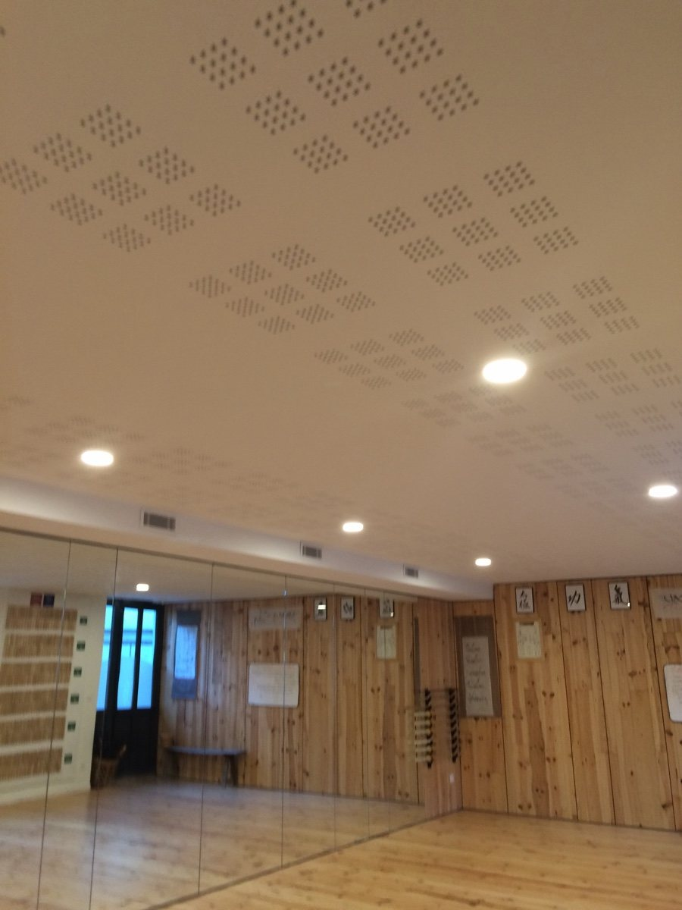
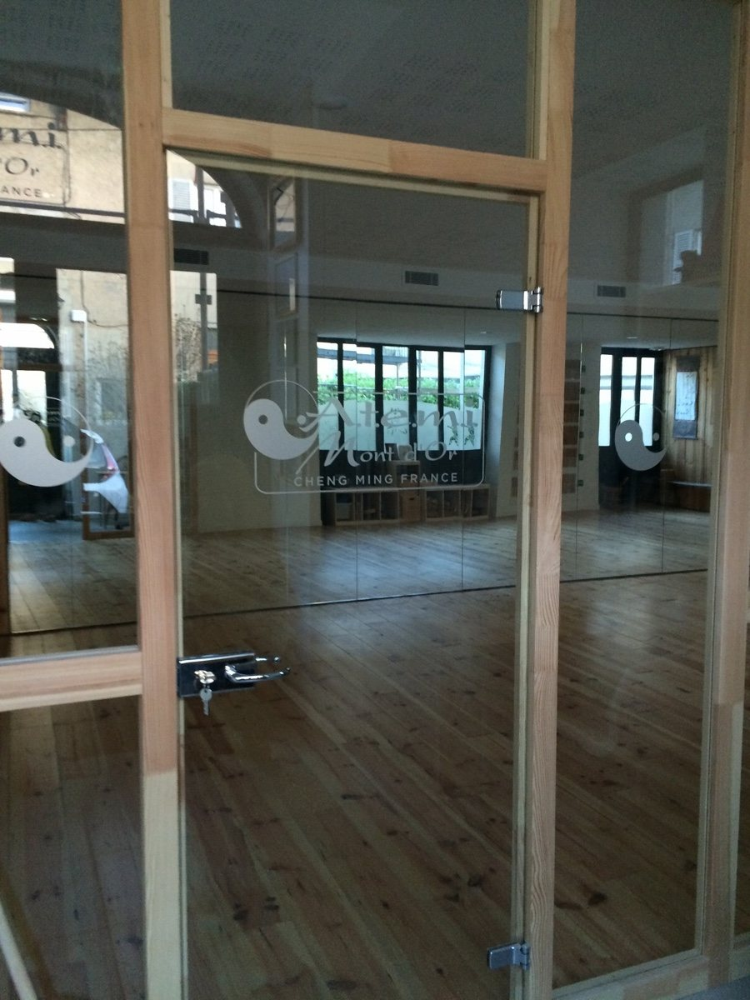
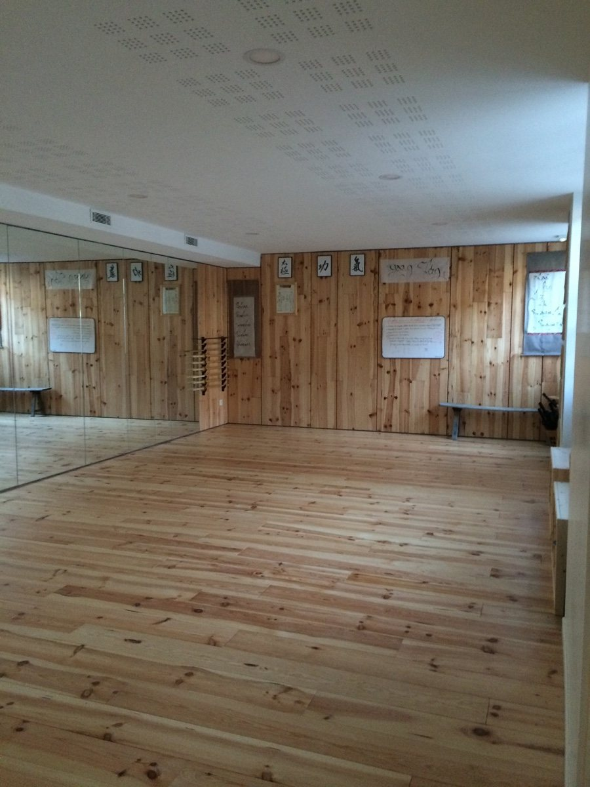

Adresse
6, rue du Lavoir
69650 Saint-Germain-au-Mont-d’Or
Un espace chaleureux, sobre et fonctionnel, consacré à la pratique, à la recherche et à la transmission des arts internes.
Installé au 6, rue du Lavoir à Saint-Germain-au-Mont-d’Or, le dojo d’ATEMI offre un cadre propice au travail du corps, de l’attention et de la relation.
La salle principale dispose d’un parquet en bois, d’un vaste mur de miroirs et d’un équipement adapté aux pratiques énergétiques et martiales internes.
Le lieu comprend également un espace d’accueil et un vestiaire pour les pratiquants.





Le dojo est plus qu’un lieu d’entraînement : c’est un espace de transformation, de partage et de recherche pour le corps et l’esprit.
6, rue du Lavoir
69650 Saint-Germain-au-Mont-d’Or
Consultez les créneaux de la saison et choisissez le cours correspondant à votre niveau et à vos objectifs.
Voir les horaires